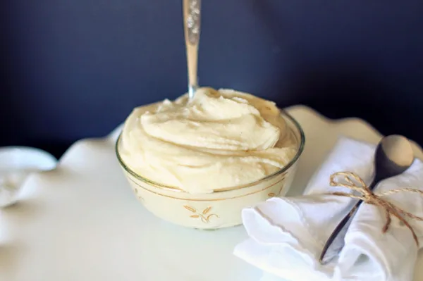
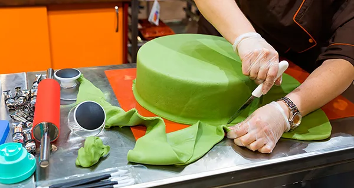

Якщо ви думаєте, що покрити торт в домашніх умовах мастикою без складочок неможливо, то поспішаємо вас переконати – це під силу кожному, головне, дотримуватися основних правил при роботі з масою. Розглянемо докладніше, як обтягнути торт мастикою без складок. У цій статті ми розкриємо основні секрети і нюанси, які поможуть створити ідеально рівне покриття. Детальніше про сам процес обтягування від а до я читайте тут.
Важливо!
Перед тим як використовувати покриття з мастики, важливо правильно підготувати базовий крем, який буде знаходитися під мастичним шаром. Кілька основних правил вказано нижче – вони допоможуть зробити тортик бездоганним.
Яким кремом краще покрити торт

Виконати акуратну обтяжку торта мастикою вийде в тому випадку, якщо ви виберете відповідний крем під неї. Перед тим як покрити десерт мастичним шаром, необхідно переконатися, що попередній шар застиг. Вирівняти тортик можна, попередньо покривши його:
- вареним згущеним молоком;
- марципановою масою;
- масляним кремом;
- ганашем.
Порада!
При роботі з масляним кремом, ганашем і вареним згущеним молоком потрібно дати покриттю час, щоб застигнути. Якщо попередньо поставити покритий кремом кондитерський виріб в холодильник на кілька годин, то мастиковий шар буде набагато простіше наносити.
Як рівно нанести мастику на торт

Вирівняйте крем вгорі і на боках торта будь-якої форми. Детальніше про цей процес читайте в статті, присвяченій обтягуванню масою з маршмелоу. Перед тим як покрити торт мастикою без складок, переконайтеся, що базовий крем застиг. Розкочуйте пласт з великим запасом – 10-15 см, так як тільки в цьому випадку покриття ідеально розтягнеться і буде рівно обтягувати торт.
Далі кондитер повинен правильно розрівняти мастиковий шар. Спочатку вирівняйте на столі «запасну» частину мастики, а потім перейдіть вже до розгладжування боків. Наступний крок – візьміть ніж для піци і обережно по колу відріжте зайву мастику.
Важливо!
Покритий торт буде виглядати акуратно, якщо залишити під час відрізання про запас 0,5 см мастичного шару, так як він може ще піднятися.
Що робити, якщо мастика порвалася
Якщо мастиковий пласт злегка порвався, виправити недоліки можна за допомогою широкого пензлика. Обмокніть його в воду і, як валиком, злегка обробіть цукрове покриття в місці розриву. Якщо під мастику потрапила бульбашка повітря, то щоб позбутися від неї, просто проколіть роздуте місце голкою. Потім цю ділянку прогладьте рукою і починайте далі прикрашати торт.